蓝哥 picks · 5/9
为什么是 Muse：Meta 想接手的，不只是你的待办事项
@0xlangeai · 蓝哥AI · Wed Sep 30 09:20:00 +0000 2026
Muse 从何而来：OpenClaw 给了团队怎样的启发
2026 年初，Meta 的一位 AI 产品负责人，被自己的 AI 催着去喝水。
他叫纳特·弗里德曼（Nat Friedman），曾任程序员协作平台 GitHub (a site for storing and sharing code) 的 CEO，如今领导 Meta 超级智能实验室的产品与应用研究团队。后来推出的个人 AI 助理 Muse，正是这个团队推进的产品。
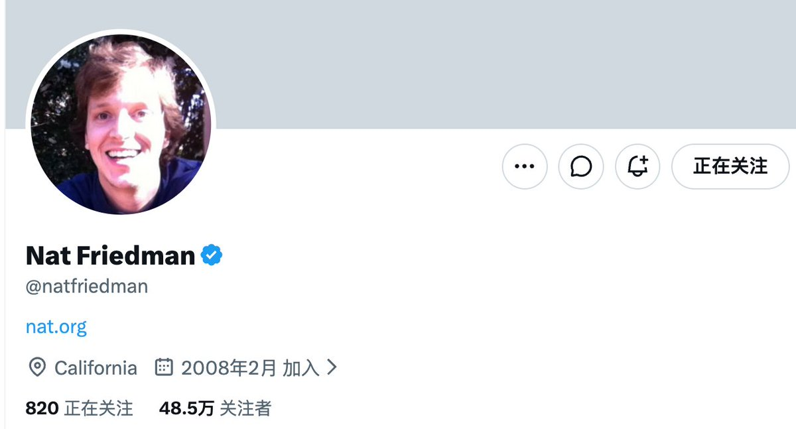
当时，纳特用的还不是 Muse，而是另一款个人 AI 工具 OpenClaw。它可以接到使用者的软件和设备中，替人执行任务。这类 AI 通常被称为 Agent (an AI that takes steps on its own to finish a task)，也就是智能体 (agent (an AI that acts on its own))。
纳特在 Stripe 举办的一场科技对谈中回忆，他把家里的摄像头接进去，又给了它自己的健康资料。一次谈到喝水，他让 AI 想办法督促自己。对方随后要求他走到厨房，当着摄像头喝一瓶水，还发来一张他喝水的截图，说了句“Good job”。他记得，那是 1 月 29 日。
他真的觉得自己做得不错。
这个细节有点好笑，也有点令人不安。一个软件已经不满足于回答问题，它开始观察现实、提出要求、检查执行，甚至给人奖励。纳特在台上并没有把它包装成所有人都向往的生活。他说：“我不知道这是不是每个人都想要的体验，但它确实让人觉得很疯狂。”
几个月后，他领导的团队推出了 Muse。Meta 想把它做成普通人也能使用的个人 AI 助理：获得授权后，它可以处理邮件、安排日程、预订行程；即使用户关掉应用，它也能继续办事。
先有 Hatch 项目，后有 OpenClaw 的启发
纳特随后在社交平台 X 上公开说，Muse 虽然是从零构建的，但在产品上深受 OpenClaw 启发。自己一月试用后，为团队买了数百台苹果小型台式电脑 Mac mini，让同事也用起来。很多人和他一样，喜欢上了个人智能体。
这条线索，比“Meta 发布了一款能替你完成任务的 AI”更接近故事的起点。但它还不是完整的起点。
商业媒体 Business Insider 的报道说，纳特早在 2025 年 9 月就已在做后来被命名为 Muse 的项目，内部代号是 Hatch。他当年还与 Meta 的首席 AI 官合写过一份关于“超级智能个人副手”的备忘录。
也就是说，不能把 Muse 的诞生写成一个天才玩到新工具、灵光一闪的故事。公开材料更支持这样的理解：Meta 已经在寻找个人 Agent 的形态，OpenClaw 让其中一些人提前体验到了那种生活。
不过，这些材料尚不能说明，它具体改变了 Hatch 的哪些原始规划。摆在团队面前的问题，是怎样把自己愿意折腾、也敢于冒险的体验，交给不懂终端、不想维护电脑、出了问题只会问“为什么你没做好”的普通人。
这位产品负责人的兴奋，也把故事带向了更大的问题：Meta 为什么要押注这种产品？公司高层期待它带来什么？而真正做产品的人，又会怎样修改那些看起来很美好的设想？
扎克伯格的转向：Llama 受挫之后，为什么押注 Muse
扎克伯格原来给 Meta 定下的 AI 目标，比做一个好用的助理更大。
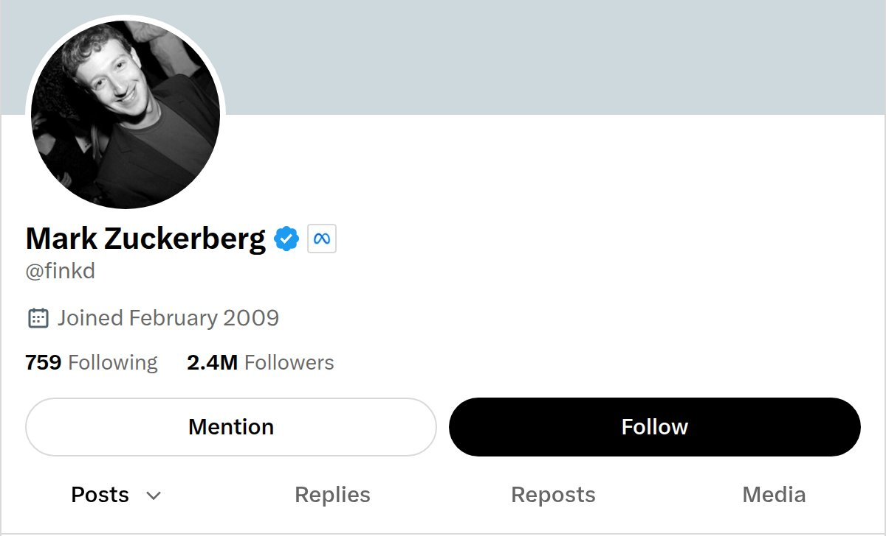
2024 年 7 月，这位 Meta 创始人兼 CEO 发表《开源 AI 是前进的道路》。他把 Llama 放在了战略中心：让开发者使用、改进这套模型，围绕它建立生态，最终推动它成为行业标准。他还预计，从下一年开始，未来的 Llama 模型会成为业内最先进的模型。
Llama 4 受挫，让他重新审视研发方法
这条路线确实积累了影响力。2025 年 3 月，扎克伯格宣布 Llama 系列累计下载量达到十亿次。把这段历史概括成“开源没做起来”，并不准确：很多开发者已经在用它，但这种生态影响力，并没有保证后续模型达到扎克伯格的预期。
到了 Llama 4，落差出现了。扎克伯格在 2026 年 9 月的 Sources 访谈中回顾，Llama 3 是一个好模型，他原本对 Llama 4 抱有更高期待；但发布之后，他认为 Meta 已经偏离了自己需要达到的发展轨迹，必须改变做法。
他也承认了一个具体判断失误：因为 Meta 擅长其他类型的机器学习，他一度以为，开发和扩展大语言模型可以沿用类似的方法。实际情况却不同。
因此，他后来更强调规模较小、顶尖人才集中的研究团队，并亲自投入大量时间招募人才、贴近技术工作。这是他对模型研发方法的反思，不能直接推导成“开源导致了失败”。
一边重建模型能力，一边做普通人能用的助理
扎克伯格没有因此退出模型竞争。2026 年 4 月，Meta 发布 Muse Spark。按官方说明，超级智能实验室此前花了九个月重建 AI 技术栈，这款模型是新系列的起点。
名字容易让人混淆：Muse Spark 是模型，Muse 是后来推出的个人助理产品。 这不是“放弃模型，改做应用”的二选一。Meta 继续训练模型，也要把能力做成用户愿意使用的服务。
对于后一件事，扎克伯格给出了很具体的方向。在 Sources 访谈里，他说，希望每个人都有一个理解自身目标、能够全天候替自己工作的 Agent；他也不相信数十亿普通人会买一台电脑，自己配置和运行个人助理。
在我看来，这也解释了他为什么重视 Muse 的易用性。让开发者拿到模型，与让普通人用上助理，中间还隔着一整套产品工作。用户不该先学会部署模型、配置运行环境，再来试着安排一次旅行。
他在财报电话会上还解释，个人助理所需的能力组合，可能与其他实验室重点训练的方向不同。自己做模型，能让 Meta 围绕这类产品的需求一起改进底层能力，而不是只改界面。
我的理解是，Meta 在继续追赶模型能力的同时，也在争取另一种领先：让普通用户遇到事情时，愿意先把任务交给它。 Llama 受挫是这次调整的背景，但不能把 Muse 写成一次模型失利后临时想出的补救方案。
过去，Meta 的信息流主要影响用户看见什么。Muse 则希望接住用户接下来要办的事：把一个目标拆成步骤，持续跟进，在获得相应授权后执行。这是它争取的使用方式，还不是已经全面兑现的能力。
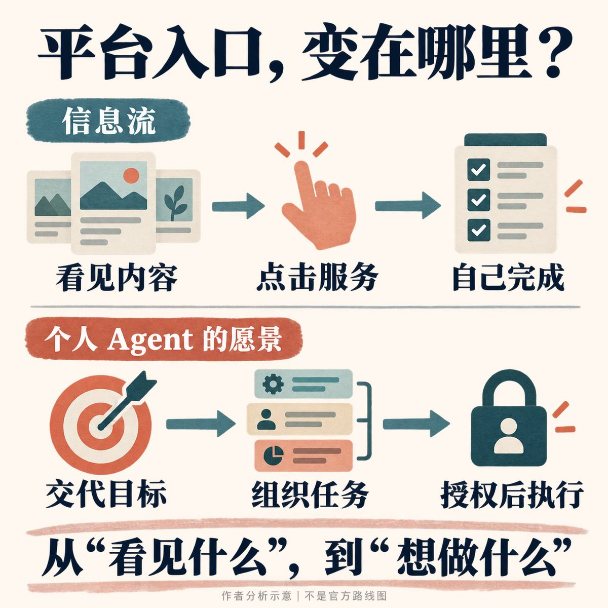
Muse 登顶美国免费榜
到了 2026 年 9 月 18 日，Business Insider 报道，Muse 已登上美国 App Store 免费应用总榜第一，排在 ChatGPT 前面。
这给了前面的故事一个有分量的转折：Llama 4 没有达到扎克伯格自己的预期，但在面向普通用户的应用市场，Muse 拿到了一个醒目的开局。
两者比的是不同的东西。模型表现要看它能完成什么任务，免费榜排名反映的是另一类市场信号。登顶不能证明 Muse 的模型已经超过竞争对手，也不能替代留存、付费和任务成功率的检验。
但它至少让这次产品押注有了一个可见的早期结果。接下来要回答的，就是人们下载之后，是否愿意把事情交给 Muse，以及用过之后，是否还愿意继续用它。
首席 AI 官的愿景：帮普通人把目标变成行动
Meta 首席 AI 官亚历山大·王（Alexandr Wang）更早就被当面问过：用户为什么要选择 Meta 的 AI？五月，他接受科技播客 Core Memory (facts the bot keeps between chats) 采访时，主持人讲了自己的经历。
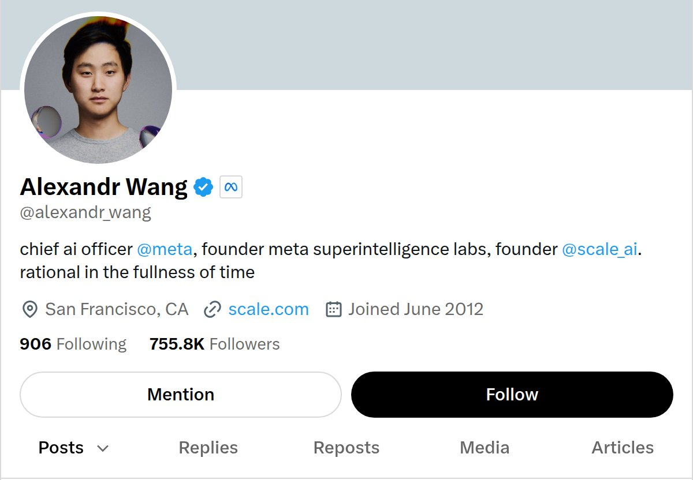
主持人告诉他：自己喜欢 Meta 的眼镜，也几乎靠旗下聊天应用 WhatsApp 经营业务。但需要 AI 干活时，他还是去找 Claude 和 ChatGPT。直到为了这次采访做准备，他才认真注意到 WhatsApp 里的 AI 入口。
这只是一个人的经历，不能拿来代替用户研究。但它把 Meta 的处境说得很直白：用户每天都在你的产品里，不等于他们愿意把新的事情交给你。
这位首席 AI 官的回答是，Meta 需要先有足够好的模型和产品，再把它们更紧密地接入整个生态。他也不认为格局已经定了：AI 能力继续进步，会不断出现此前没有的产品形态。
他的产品答案：帮用户组织行动，而不只回答问题
9 月 25 日，他发了一篇短文，标题是《我们为什么打造 Muse》。这篇文章更具体地说出了，他想做的产品究竟有什么不同。
开头是：“Most people never say what they want.”
大多数人从未说出自己真正想要什么。
他接着列出一些愿望：多陪家人，克服社交焦虑，吃得健康一点，开一家面包店，做一个应用，或者在混乱的生活里找到片刻安静。在他的描述中，这些愿望往往不是被某个宏大的灾难摧毁，而是消失在表格、日程、门槛，以及那些始终没有打出去的电话里。
然后，他给出了一个很特别的产品比喻：每个人都可以拥有一位“general manager”，全部工作就是弄清楚你想要什么，并设法让它发生。
这个比喻比“助手”更重。
助手可以等你安排任务；总经理需要理解目标，拆分工作，调动资源，追踪进展。如果一个人连愿望都还没有说清楚，它甚至要从“我是不是还能做点别的”这样的半句话开始帮忙。
这解释了 Muse 为何不满足于把一轮对话回答得更好。按照这位首席 AI 官的愿景，用户不应当先学会做项目经理，再把每一步写成精确指令。否则，产品仍然把最困难的一部分工作留给了人。
不过，这篇文章写于产品发布之后。它能说明他希望人们怎样理解 Muse，不能单凭它证明团队最初就是照着这份文字立项的。
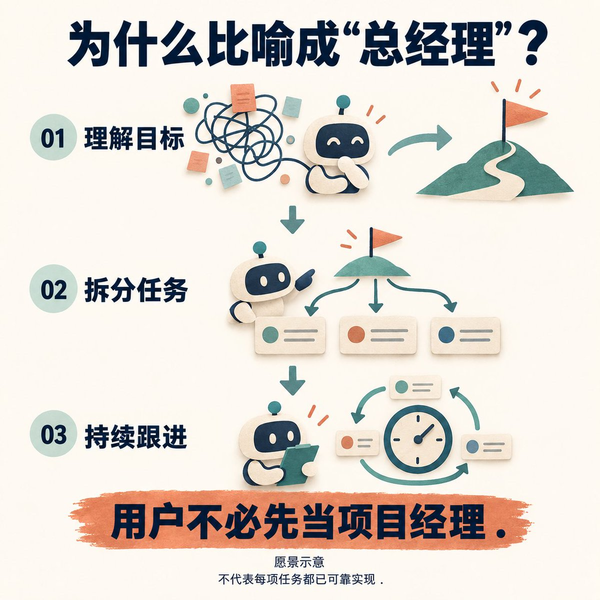
让非技术用户，也能感受到 AI 带来的能力提升
这种面向普通人的取向，在五月的那场访谈中已经出现。
当主持人问到普通人对 AI 的反感时，亚历山大·王承认，行业还没有充分证明，AI 能在现实中显著增加普通人的行动能力。他把这种体验与开发者作了对照：开发者已经能做到以前做不到的事情，而普通消费者、小企业主还没有普遍获得同样强烈的感受。
这比“人人都需要 AI”更像一个可讨论的产品判断：程序员已经尝到了能力突然变大的滋味，Meta 想把这种体验带给没有技术背景的人。
个人目标的背后，还有消费者与商家的协作
他谈到，Meta 同时连接着大量消费者和小企业。如果这两边都有自己的 Agent，它们便可以相互协作。他借用了同行常说的“数据中心里的天才之国”，提出自己兴奋的方向是“数据中心里的 Agent 经济”。
至此，个人愿望与平台业务接上了。
一个人想开面包店，需要店面、设备、许可、供应商和顾客；一个人想安排家庭旅行，需要住宿、交通、活动和支付。帮人实现目标，常常意味着替他与一系列商家和机构打交道。
“给每个人配一位总经理”可以是一份真诚的个人愿景，也可以为 Meta 打开一片新的商业空间。没有必要急着把前者判成包装，把后者判成真相。值得研究的是，两者如何在同一个产品里相互支持，又会在什么地方发生冲突。
这位首席 AI 官自己也留下了一个微妙的边界。他写：“最棒的是，我们并不知道人们会想要什么。”
这句话若被认真执行，意味着 Agent 应当帮助用户形成和实现自己的目标，而不是把用户带向平台更容易衡量、更容易变现的目标。产品越主动，这条边界越难守。
纳特的产品任务：让普通人也能用好个人 Agent
再回到开头被 AI 催着喝水的纳特。与讨论公司战略的扎克伯格、描绘个人愿景的首席 AI 官相比，这位领导产品与应用研究团队的负责人，谈得更多的是自己怎样用这些工具。
在前面那场科技对谈里，他说自己一月玩上 OpenClaw 后，就开始把它接到各种东西上。除了被催着喝水，他还讲过一次下班回家的经历：车上开启着特斯拉的辅助驾驶功能 FSD，他通过 WhatsApp 语音消息和 AI 聊睡眠。按他的自述，AI 建议购买一种补充剂，又把导航目的地改成了沿途的一家 Whole Foods 超市。
这些是他讲述的 OpenClaw 使用经历，不是 Muse 的功能演示，也不是经过独立验证的健康建议。但它们能解释，他迷恋的究竟是什么。
那种体验不再以软件窗口为边界。对话可能从手机开始，涉及家里的摄像头，最后影响真实世界的一段行程。用户不需要先想清楚该打开哪个应用，工具围绕事情组织起来。
对一个喜欢自己接设备、改软件的人来说，这很容易上瘾。对大众产品负责人来说，问题却马上出现了：你觉得刺激的那部分，很可能正是别人觉得可怕的部分。
安全与易用，才是从极客工具到大众产品的门槛
纳特对此并非毫无警觉。他在同一场对谈里明确说，当时这类 Agent 还不安全。自己不让它访问互联网上任何人都能投递内容的收件箱，因为模型仍可能把邮件里的恶意指令当成自己应该执行的要求。这类攻击叫作“提示注入”。
因此，不能把这个故事写成“激进的产品负责人只管追求能力，保守的安全团队负责踩刹车”。纳特本人就同时看见了能力和危险。
九月，他对 Muse 与 OpenClaw 关系的解释，几乎就是一个产品任务书：做出类似体验，但让它安全、易用，而且可以扩展到数十亿人。
这里最值得注意的是“类似体验”，而不是技术标签。
复制一种能力，和复制一种可被普通人依赖的体验，中间还隔着设置、凭据、权限、失败恢复、成本，以及用户根本不知道该从何开始的问题。技术用户愿意为了神奇时刻忍受这些麻烦，普通用户未必愿意。
扎克伯格在科技媒体 Sources 的专访中表达得更直接：他不认为会有数十亿人专门买一台苹果台式电脑，配置好，放在家里运行 AI。他想做的是，可以交给家里不同技术水平的人、拿到就能用的个人 Agent。
纳特也想减少工程师面对的流程阻力
产品负责人纳特想拿掉的摩擦，也不只在用户的设置流程里。在 Stripe 的同一场对谈中，他说自己“不看组织架构图”，而是直接找实际做事的人。他承认，这种工作方式会非常混乱，在某些方面甚至“可能有毒”。但他不接受工程师为了一个跨越三层技术栈的改动，就得开十场会、写十份文件。
他还举了一个 Meta 内部的例子：训练数据标注工具太笨重、审批太多，团队就会把各种任务捆成一大批，减少实验次数。他认为，换掉这种工具，才能改变团队的工作节奏。
这让他的产品主张多了一层具体含义。他希望普通人不必被配置工作挡住，也希望自己的工程师不必被组织流程挡住。但缩短内部决策链，不等于可以省掉产品的安全边界；他在同一场对谈里对提示注入的警告，恰好说明这两件事不能混为一谈。
产品团队的出发点：替用户记住容易漏掉的事
把视线从高管移到产品团队，Muse 的叙述突然变小了。
参与 Muse 的两位负责人合写了一篇设计文章：一位是产品管理副总裁 Mona Sarantakos，另一位是负责 Muse 工程团队的 Christine Awad。她们分别从产品和工程的角度参与这项工作，也已经共同做产品近十年。在文章里，两人反复谈到的却是同一个生活难题：如何在工作、孩子、父母之间分配有限的时间。
那位产品管理副总裁写过一个使用 Muse 的例子：发布前忙碌的一周，她让 Agent 帮忙处理孩子开学的杂事，包括学校邮件、家庭日历和用品采购。随后，Muse 在邮件里发现，她儿子的一次体育选拔报名即将截止。她收到提醒时正要登机，于是联系丈夫，最终在截止前补上了材料。
这是一段官方文章中的个人自述，不能当成独立测评。但作为产品负责人选择讲述的故事，它很有信息量。
她没有挑一个“AI 十分钟生成了巨大项目”的例子。她挑的是：有一件自己本来可能忘掉、忘掉后也很难补救的小事，被记住了。
这里要减轻的负担，不只是做事所花的时间，还包括一直在脑子里悬着的责任。家长可能花不了几分钟就能填完表，却要在大量邮件和工作间隙中记得：这张表存在，快到期了，而且不填就会错过。
从这个角度看，后台运行和主动提醒才有了生活上的理由。它们不是为了让 AI 显得更活跃，而是为了让用户可以暂时不惦记某件事。
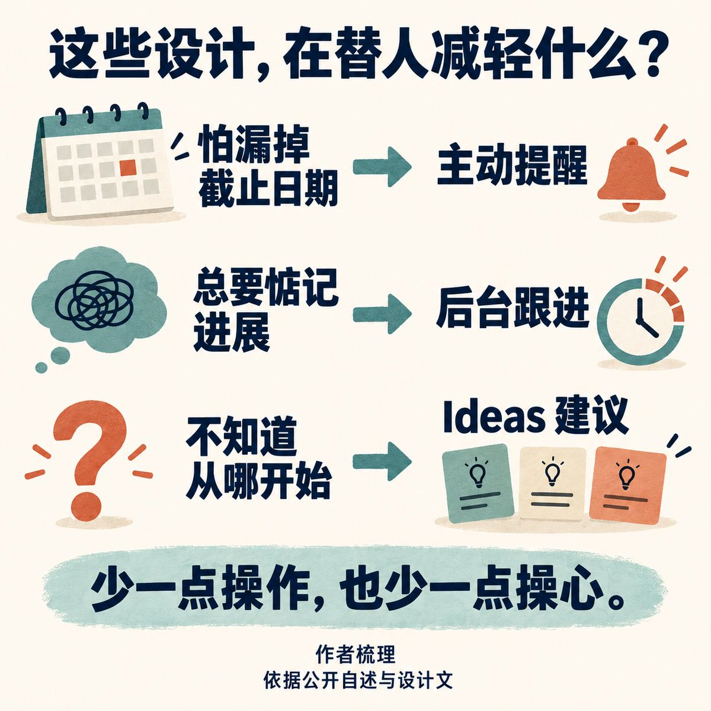
同样的取向，也出现在扎克伯格讲自己的使用经历时。他说，女儿喜欢烘焙，自己却不懂，于是让 Muse 每周安排合适的项目并准备食材。其中一次选到的 cake pops，也就是棒棒糖蛋糕，比想象中难做。他在访谈里提醒：不要从这个开始。
这个并不完美的小插曲，反而比顺滑的演示更能说明目标。AI 没有代替父亲陪女儿烘焙，它接手准备工作，并根据失败调整下一次安排。扎克伯格公开选择用这样的故事解释产品：AI 的工作结束后，人的生活才开始。
功能越多，越需要告诉用户从哪里开始
不过，团队的生活经验只是起点，不是需求的全部。
负责 Muse 工程团队的那位搭档，在发布帖中提到，团队已经根据数千名员工和早期测试者的日常反馈，进行了数月内部迭代。官方设计文也承认，测试暴露出一个令人意外的问题：Muse 能做的事情太多，用户反而不知道让它做什么。
这使首席 AI 官所说的“帮你说出愿望”，从理想变成了具体难题。给用户一个空白输入框，再写一句“你可以做任何事”，远远不够。团队因此加入使用引导和名为 Ideas 的建议页面，让产品根据已经知道的目标提出可能的下一步。
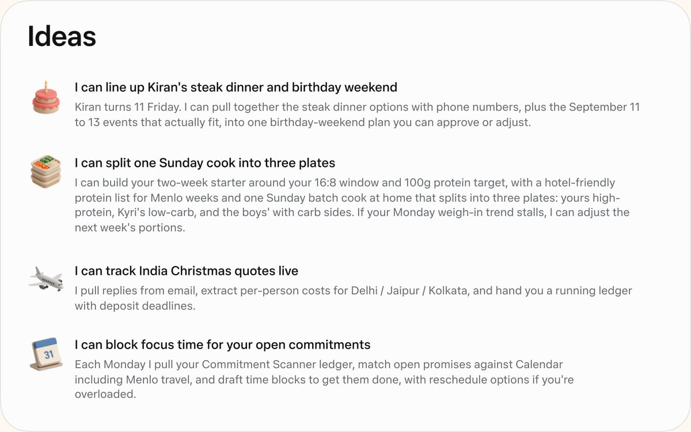
这里始终有一条危险的分界：帮用户发现自己可以做什么，和替用户决定他应该想要什么，看起来非常相似。产品团队必须处理它，使命宣言不会替他们处理。
设计团队的取舍：让后台工作的 AI 变得可理解
把这些想法落实到屏幕上的，是产品设计团队。负责人 Alex Cornell 曾公开讲过，自己怎样推翻了过去坚持的设计主张。
2024 年，他为 Meta AI 做过一段十分钟的内部视频，主张去掉消息气泡。他最终说服了团队，让回答摆脱聊天气泡的视觉限制。他至今仍认为，那对通用 AI 是合适的。
但做 Muse 时，他又朝相反方向走了。
他的理由是，Muse 应当让人感觉自己在和一个持续存在的实体交互，而不只是在操作工具。“It’s an agent! Not a search box.”这是一个 Agent，不是搜索框。
这不是圆角大小之争。如果产品只在你提问后返回一段结果，无边界的文档式布局很自然；如果它会主动发消息，你也会连续交办几件事，消息气泡便在表达：这里有不同时间发出的不同念头，也有一个不会随这一轮回答结束而消失的对象。
气泡适合对话，不代表整个应用都该装进气泡
不过，这位设计负责人把这个方向推得太远了。他回忆，有一段时间，Muse 发出的所有东西都被装进气泡里，整个应用都采用类似的层叠效果。他很喜欢，甚至说自己仍然怀念那套视觉。
但他也承认，放到整个应用中看，它太嘈杂了。最终，这个方向在一次会议上遭到重创，视觉设计大幅改变。
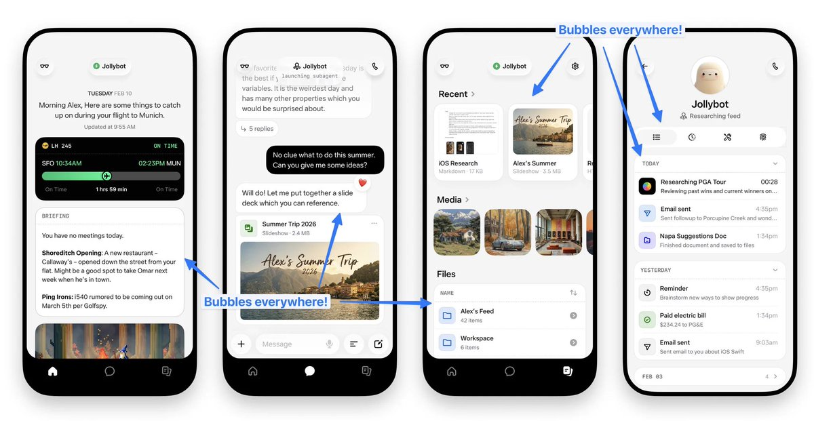
后来被放弃的“全气泡”方案。聊天、文件和活动记录都被装进圆角容器，蓝色批注是设计师原笔迹。
他没有公布那场会是谁否决、谁拍板。留下来的，是一个设计师对自己偏好的坦白：他愿意为它辩护，甚至到现在仍然喜欢它，却也承认，那并不适合铺满整个产品。
状态条显示进度，旁支聊天区分话题
按他的回忆，Muse 最早原型中第一个被设计出来、后来经历数月修改仍然留下的，是顶部的状态条。最初还没有头像，只有大约六种确定状态。它要回答的问题非常朴素：我的 Agent 现在到底在做什么？
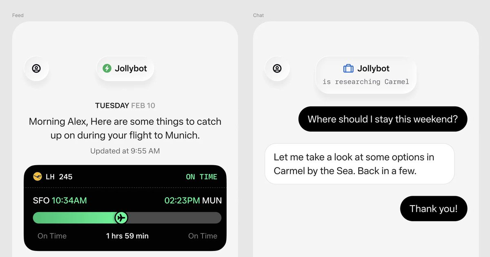
我们看到成品时，很容易把 Muse 的个性归因于那个可爱的形象。但按设计师的回忆，团队最早需要解决的，甚至只是让测试者知道系统是否连接、有没有在工作。
这改变了对“人格化”的理解。可爱的形象当然有传播和情感价值；可是在它之前，产品要先让一个后台运行的系统变得可理解。否则，越像一个活着的东西，沉默时就越令人困惑。
前面合写设计文章的产品与工程负责人，还披露过另一项妥协：团队倾向于用一个长期主对话承载关系，但早期用户希望把某些主题的上下文分开，最终才加入旁支聊天。
这些变化说明，Muse 并不是把一套漂亮的“Agent 应当像人”理论完整落实出来。它是在不断发现这套理论哪里不够用。
工程团队的难题：能力之外，还要守住权限和隐私
发布文章通常会让一款产品显得顺理成章：先确立愿景，再围绕愿景做出正确选择，最后交付。
前面提到的 Business Insider 报道，呈现了另一面。
记者在九月的报道中援引知情者称，距离上线只有两周时，Muse 仍在英语表达和连贯性上吃力；更早试用的一些 Meta AI 员工甚至觉得，它像是一个底层模型更差、使用步骤更多的聊天机器人。
这部分材料依赖匿名消息源，没有版本号、测试日志或评测分数可供独立核验。但至少，它提醒我们：今天看起来成立的产品定义，并不保证早期产品也成立。
报道说，团队依靠大量内部使用产生的数据，一项项改进复杂任务：安排会议、取消机票、选择没有见过的工具，以及学会不要透露不必要的私人信息。
其中一个例子很具体：代人解释为什么无法参加会议，不等于应该把“因为宿醉”也告诉别人。报道把它作为需要训练的分寸问题；它不是一宗已经被证实的隐私泄露事故。
这类问题很难靠“模型更聪明”一句话概括。能知道一件事，和知道什么时候不该说，是不同的能力；知道怎么执行，和知道自己是否有权执行，也不是同一件事。
把权限检查放进系统，不能只指望模型听话
Meta 超级智能实验室的工程师兼副总裁 Tarek Sheasha，在公司公开的安全架构文章中披露，团队第一次把收件箱、日历和执行电脑命令的权限交给无人值守的软件时，结果并不总如预期。让它更安全地服务普通人，是整个项目投入精力最多的地方。
因此，Muse 的设计并不建立在“只要模型足够听话就没问题”的假设上。按照其公开架构，系统默认 Agent 可能犯错，也可能被它读到的内容攻击；它运行在隔离的电脑环境里，看不到真实密码等凭据；对外执行操作前，还得经过名为 Sentinel 的独立权限检查，不能自行绕过。
这里，安全已经不是上市前补上的文档，而是决定产品能被交给谁的条件。
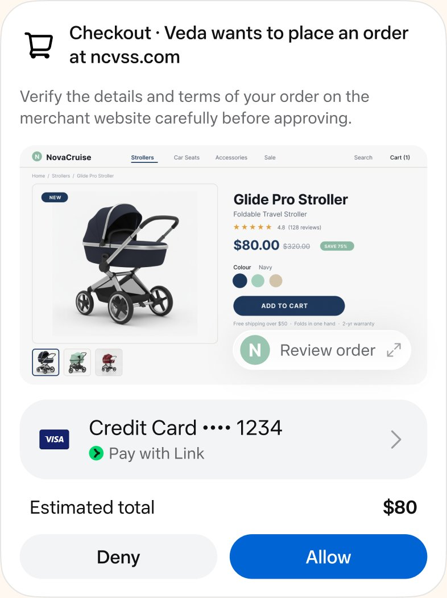
让 Meta 也看不到数据，仍是后续计划
为了处理更敏感的隐私问题，扎克伯格还与产品负责人纳特一起，请来了加密通讯应用 Signal 的创始人 Moxie Marlinspike。这是扎克伯格在专访中披露的招募经历；对方参与的工作，是让 Muse 运行在一个连 Meta 自身也无法查看其中数据的加密电脑环境里。
这项方案叫作 Confidential VM，即机密虚拟机。不过，发布公告把它列为年内后续计划，不能倒写成发布当天就已对所有用户实现。
扎克伯格借此强调的，是一个商业上也很现实的逻辑：个人 Agent 越了解你，越可能有用；但如果你不信任它，就不会把足够多的生活交给它。
这与纳特最初的极客体验形成了鲜明对照。个人愿意冒险，可以自己承担；一家公司要让大量普通人依赖它，就必须把“出了错怎么办”写进系统，而不只是写进免责声明。
Muse 的商业模式：订阅、交易与用户利益
到这里，Muse 很容易被讲成一个温暖的故事：老板想陪女儿，产品负责人想少漏一封邮件，AI 负责人想让普通人实现愿望，工程师把风险挡在外面。
这些都值得认真对待。但还缺一块：它怎么成为 Meta 的生意？
采访扎克伯格的科技记者 Alex Heath，在发布文章中解释了扎克伯格的商业设想：向大多数人提供大量免费使用，向重度用户提供订阅；长期则希望从促成的交易中抽取很小一部分，付费方可能是与用户交易的商家。
这里必须保留“长期”和“可能”。这不是已经核实的现行抽成费率表。Meta 的发布公告也没有说无限量免费，而是多数需求免费，更多使用另有订阅。
个人助理也可能成为连接消费者与商家的平台
把这段商业说明，与首席 AI 官在五月提出的“消费者 Agent 和商家 Agent 相互协作”放在一起，Muse 的平台意义就更清楚了。
今天，商家可以花钱获得被用户看见的机会。未来，如果个人 Agent 接到的是“帮我安排周末”“找到适合的课程”“把这次搬家处理好”，那么平台的作用就可能延伸到需求形成之后的一连串选择与交易。
这是我的分析：Meta 想做的，可能不只是卖一个更好用的助理，而是更深地参与消费者与商家如何找到彼此、如何完成事情。它以前擅长把注意力连接到供给；Muse 则提供了把明确意图连接到执行的机会。
扎克伯格本人也没有把 Agent 只当作单人产品。他在 Sources 访谈中谈到，行业目前常把 Agent 看成“单人游戏”；Meta 已在内部尝试让不同人的 Agent 相互交互。他同时说明，这类能力大部分不在此次发布中。
所以，个人助理与网络效应并不矛盾。产品表面上属于“我”，其长期价值却可能随着朋友、家人和商家加入而改变。这确实是 Meta 熟悉的竞争方式，但能否奏效，还不能用愿景替代验证。
如果平台从交易中获利，助理还会劝你不买吗？
假设你让 Muse 帮忙控制预算，而平台能从交易里获利：它是否同样愿意建议你，这一件东西不用买？如果没有合作关系的商家更便宜，它会不会推荐？当它判断一个订阅已经没有价值时，会不会主动替你取消？
这些是假设检验，不是对 Muse 已经操纵推荐的指控。目前的材料并不能证明它做过这些事。
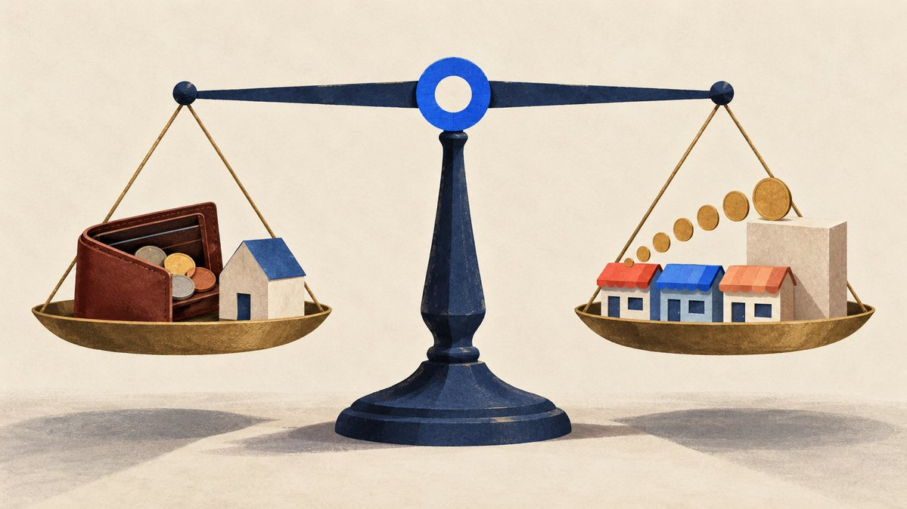
反过来，把 Muse 简单写成“Meta 又来拿私人聊天投广告”，也不符合公开证据。Meta 明确声明，Muse 的对话和它运行的虚拟电脑内的数据不会共享给 Meta 的广告系统；这项承诺的完整落实情况，仍需独立检验。
即便承诺完全兑现，交易抽成仍然有另一套需要解释的激励。广告问题减少了，并不代表所有利益冲突都自动消失。
扎克伯格在八月长文中，给出了一个足够强、也足够值得追责的标准：Agent 应当与个人的目标和价值观一致，而不是与公司的目标和价值观一致。
这句话比“AI 更懂你”有分量。它要求产品在公司与用户的利益不相同时，仍然能够站在用户这一边。
评价 Muse 的标准：利益冲突时，是否仍为用户服务
回看这些材料，我更愿意把 Muse 理解成几种诉求逐渐汇合的产物，而不是某个人完整构思后交给团队执行的作品。
在我看来，Muse 给了扎克伯格一次把 Meta 已有的全栈能力延伸到个人 Agent、争取下一代用户入口的机会。他本人在财报中强调，Meta 不只是社交应用和广告业务，而是一家全栈技术公司；自主构建模型，是他认为这套技术栈未来必须具备的能力。
首席 AI 官亚历山大·王，试图把“更强的智能”翻译成普通人能感受到的行动能力。他想象的不是每个人每天多问几道题，而是那些原本不会开始的事情，终于有人帮忙开始。同时，他也清楚地谈到了一个由消费者和商家共同构成的 Agent 经济。
按 Business Insider 的报道，产品负责人纳特在试用 OpenClaw 前就已参与后来成为 Muse 的项目；一月的亲身体验，为这个方向提供了具体的产品参照。他后来公开把目标概括为：保留类似体验，但让它安全、易用，并能服务数十亿人。
负责产品、设计和工程的团队，则要在具体日常里不断修正这些愿景：用户会漏邮件，也会不知道该交办什么；长期单一对话不够；好看的气泡不能铺满全屏；自主执行必须有不能自行越过的权限边界。
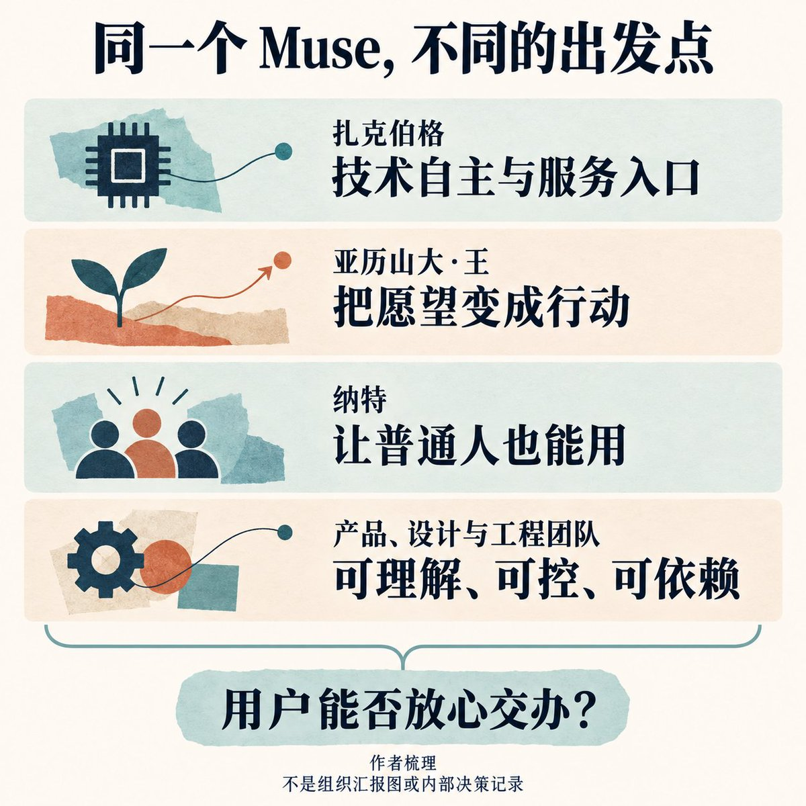
这些诉求之间有张力，却不足以证明高管之间存在派系冲突。五月有人当面问首席 AI 官亚历山大·王，高层是否在研究路线与产品路线之间严重分裂，他否认了这种说法。无论团队内部是否一致，产品仍然要面对那些相互拉扯的要求。
它要懂你，又不能过度打探；要主动，又不能接管；要像一个熟悉的对象，又不能用亲切感代替可靠性；要替你省事，又不能把省下的步骤变成你看不见的利益安排。
甚至“替你省时间”也不能被轻易当作整家公司的价值转向。就在同一年的财报里，Meta 仍在报告 Instagram 使用时长的增长，以及把参与度变成收入的能力。这不能证明 Muse 会把省下的时间导回信息流，但它提醒人们：一款产品的新承诺，仍然存在于一家有既有增长目标的公司里。
真正的检验：愿不愿意放弃不符合用户利益的交易
因此，评价 Muse 的设计理念，不能只看他们选择了什么，也要看他们最终愿意放弃什么。
愿不愿意放弃一次本可以促成、却不符合用户利益的交易？愿不愿意让用户撤回权限，即使那会降低产品的表现？愿不愿意承认某个主动建议没有帮助，而不是把它解释成用户还没有学会使用？
在发布阶段，我们已经能看到一些具体取舍，也能看到大量尚未兑现的主张。Muse 是否真的把能力交到了个人手里，要在之后无数不起眼的决定中验证。
从这个意义上说，最值得盯着的，未必是它又完成了多惊人的任务。
也许是某个普通的晚上：用户问它该买哪一件东西。它了解用户的预算，知道有哪些商家，也有能力直接下单。最后，它建议今天什么都别买。
如果那一天到来，我们才更有理由相信，那个“只为你工作”的私人助理，真的理解了“为你”是什么意思。
参考资料
本文基于公开资料。人物经历保留自述或报道归属；平台战略与商业激励的判断属于作者分析。访谈依据发布方公开实录。
人物访谈与自述
- Stripe Sessions：纳特谈 OpenClaw、个人 Agent 与团队工作方式
- Core Memory：Meta 首席 AI 官亚历山大·王访谈
- Sources：扎克伯格谈 Muse、Meta 战略与商业模式
- 亚历山大·王：Why We’re Building Muse
- 纳特：Muse 与 OpenClaw 的关系，以及数百台 Mac mini
战略与商业背景
- 扎克伯格：Personal Superintelligence
- 扎克伯格：Open Source AI Is the Path Forward
- 扎克伯格：The Future Is for Everyone
- Meta 2026 年第二季度财报电话会实录
产品、设计与安全
- Meta：Muse 官方发布公告
- Muse 产品与工程团队：How We Designed Muse
- Tarek Sheasha：How We Built Safety Into Muse
- Alex Cornell：为什么曾主张 Meta AI 去掉消息气泡
- Alex Cornell：Agent 不是搜索框
- Alex Cornell：Muse 最早的状态条设计
- Alex Cornell：后来被放弃的全气泡方案
- Christine Awad：Muse 发布与内部迭代
- Christine Awad 的公开任职信息
独立报道
Source: https://x.com/0xlangeai/status/2105226142668251153
← Muse 上手保姆级教程：从登录到完成第一个任务 别再急着买API, 用 CLIProxyAPI 盘活你的 AI 订阅 →